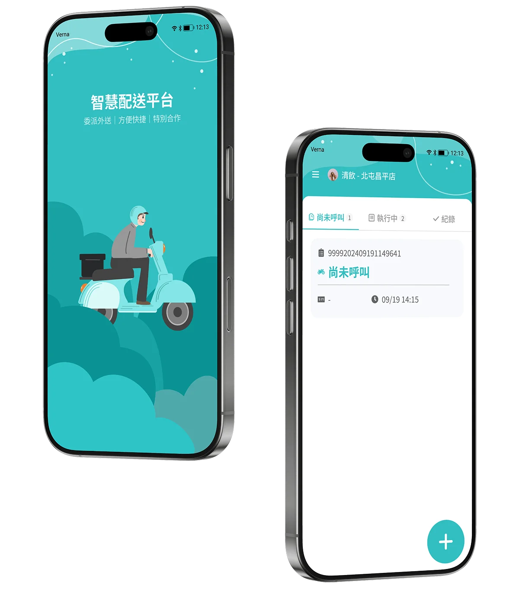
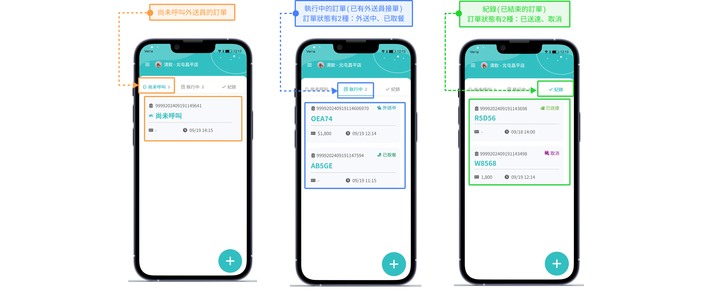
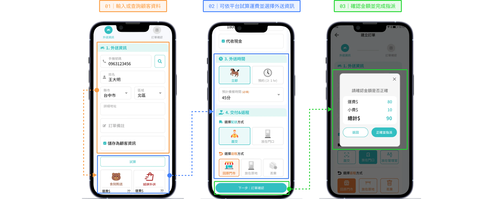
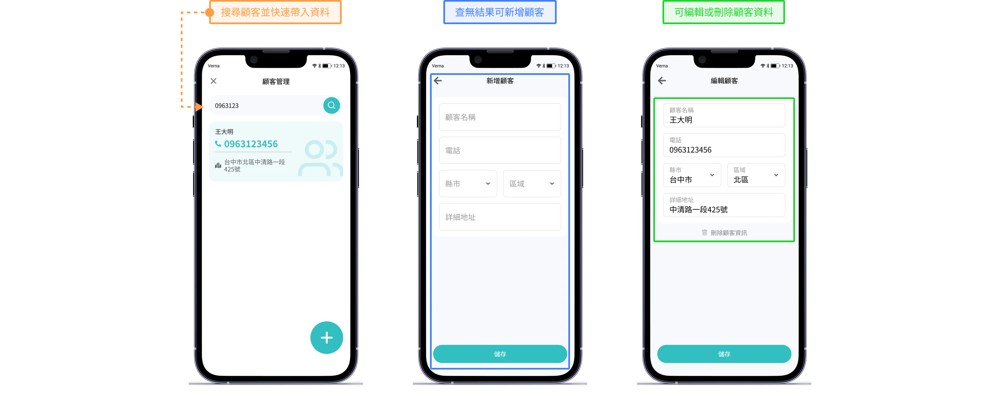

專注服務，外送交給智慧
節省人力、提升流程，讓門市專注於最重要的顧客服務
本案例改編自前公司專案，品牌與資料皆為虛構。

UI Designer
我的角色
負責外送派單流程梳理、互動原型、關鍵介面設計與元件規範，並與 PM、工程師協作完成設計交付。
Goal
專案目標
整合第三方外送派單與任務管理流程，簡化店員操作並提升派送效率，降低前台作業負擔。
Challenge
核心挑戰
-
配送進度難以掌握
外送任務分散於不同平台，缺乏統一的外送服務分類與狀態資訊，增加追蹤成本。
-
運費與配送選擇不直覺
不同外送平台的運費及配送條件各異，店員需要額外時間確認與比較。
-
手動派單耗時
重複輸入顧客資料、配送地址與派送資訊，增加操作時間及輸入錯誤的風險。
接下來針對以上問題，重新整理資訊層級、操作路徑與訂單狀態呈現。
01集中管理外送服務
將外送服務依「尚未呼叫、執行中、紀錄」分類，卡片呈現訂單編號與預計送達時間，協助店員快速掌握待處理訂單，並透過固定的新增按鈕快速建立外送單。

02簡化外送派單流程
整合資料輸入、運費試算與派送確認，減少重複操作。

03快速搜尋與帶入顧客資料
透過電話搜尋、資料帶入與空狀態引導，提升建單便利性。

本案例改編自我在前公司參與的專案，品牌名稱、客戶資料與數據已替換為虛構內容。介面設計沿用原專案的部分架構，僅用於說明我的設計流程。